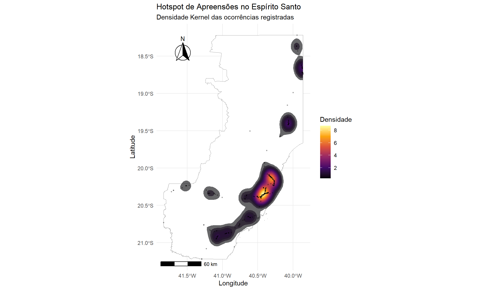

| local_apreensao | grupo_apreensao | tipo_apreensao | unidade_apreensao | total_uf | ano | quantidade_apreensao |
|---|---|---|---|---|---|---|
| ES | Diversos | Cigarros | maços | 2851907 | 2022 | 96997 |
| ES | Diversos | Cigarros | maços | 2851907 | 2023 | 1254630 |
| ES | Diversos | Cigarros | maços | 2851907 | 2024 | 1500280 |
Analisando registros de aprensões de psicoativos no Espirito Santo e o impacto do programa Estado Presente
Introdução
O uso de substâncias psicoativas — como álcool, tabaco, maconha, cocaína, crack e medicamentos controlados — provoca impactos profundos na vida individual, familiar e coletiva. Seus efeitos se estendem muito além do campo pessoal, repercutindo em diversos âmbitos da sociedade, influênciando movimentos e incentivando criação de politicas públicas dedicadas a lidar com esses estigmas. Dentro desse contexto, esse relatório se dedica a analisar os registros de apreenções de psicoativos no Espiríto Santo realizados por orgãos importantes da segurança pública, sendo, policia federal, policia rodoviária federal e policia estadual. Bem como, avaliar o impacto do programa Estado Presente implementado pelo governo do Estado na data de 28/12/2017. Para uma análise com rigor estatístico, foi implementado diversos métodos de visualização para dados temporalmentes associados, assim como, foi realizado testes estatísticos para avaliar se houve mudanças relevantes após a implementação do programa. Paralelamente, devido a falta de discriminação a nível de municipio nos registros do banco de dados disponibilizados pela Policia Federal e pela Policia Estadual, não foi possivel avaliar o desempenho no projeto com esses dados, sendo realizado apenas uma analise geral do desempenho do Espírito Santo. Os dados disponibilizados pela Policia Rodoviária Federal são discriminados a nível municipal, entretando, não são discriminados a nível bairro/distrito, devido a esse fato, adotou-se uma abordagem generalista para representar o impacto do projeto, utilizando dados municipais.
Analise das apreensões realizadas pela Policia Rodoviaria Federal
Sobre os dados
Os dados são referentes as apreenções de drogas feitas pela Polícia Rodoviaria Federal e foram obtidos através do Observatório Brasileiro de Informações sobre Drogas (OBID), obid/seguranca-publica, vinculado ao Ministério da Justiça e Segurança Pública.
o total são três bases relacionadas as apreenções feitas pela PF, PRF_Apreensoes_comp, PRF_ApreensoesCigarro e PRF_ApreensoesVape, sendo PRF_ApreensoesCigarro e PRF_ApreensoesVape bases com registro anual do total de apreensão ocorrido em cada estado. A base PRF_ApreensoesVape não possui nenhum registro do Espiríto Santo, portanto não será abordada neste relatório. A base PRF_ApreensoesCigarro possui apenas registro de 2022, 2023 e 2024, suas informação são descritas abaixo:
Sendo assim, este relatório está sessão será dedicada em analisar a base PRF_Apreensoes_comp que possui registros de data da apreençaõ, especificado por dia e hora. Está base também tem variáveis descritivas que indicam se a apreensão ocorreu em zona rural ou urbana, qual o local (BR, Comercial, Residencia, etc.), qual drogas foi aprendida (maconha, cocaina, etc) e é discrimininada a nível municipal, tornando possivel comparar as cidades com bairros que foi implementado o programa Estado Presente.
Análise Descritiva
Essa seção se dedica a explorar caracteristicas basicas das apreensões realizadas, principalmente em relação ao tempo e frequência de caracteristicas comuns, como: “Quais zonas há mais apreensões? Rural ou Urbana?” ou “O quão regular foi apreensões de canabis e derivados ao longo dos anos?”.
Total de apreensões em relação a cidades do Estado Presente
As cidades com bairros selecionados para o programa Estado Presente são: Aracruz, Cachoeiro de Itapemirim, Cariacica, Colatina, Linhares, São Mateus, Serra, Vitória, Vila Velha, Vitória. No gráfico 1, é possivel analisar a área acumulada do total de apreensões anuais, enquanto no gráfico 2 há demonstrado em um gráfico de barras a quantidade equivalente por mês para cidades influênciadas pelo programa Estado Presente e os demais municipios do estado.
A partir de 2019, observa-se um aumento no número de apreensões nos municípios contemplados pelo programa, em comparação aos demais municípios.
Isso sugere que a política pública teve algum impacto na intensificação das operações da PRF nesses territórios prioritários.
Total de apreensão por mês
Avaliar o total de apreesões em um intervalo menor permite analises mais detalhadas e inferir tendências. No gráfico 3, avaliamos o total de apreensões por mês para todos os municipios do Espirito Santo.
As apreensões possuem variações mensais recorrentes, indicando possíveis padrões sazonais, como aumento nos meses de férias ou períodos de festividades. Isso pode estar relacionado a maior circulação de pessoas e veículos, facilitando as abordagens policiais e, portanto, aumentando as apreensões. Ademais, é interessante realizar algum teste para confirma se há de fato sazonalidade no número de apreenções.
Relação apreensão e categoria de psicoativo
Com a finalidade de avaliar a diferença em nível de apreensões para as diferentes categorias de psicoativos, foi categorizado os diferentes tipos de apreensão de drogas em grupos mais amplos e interpretáveis. Os grupos foram:
Cocaína e Derivados: Cocaína/Cloridrato de Cocaína, crack;
Cannabis e Derivados: Maconha, pés de Maconha, Haxixe;
Sintéticas/Estimulantes: Anfetaminas, ecstasy, lança-perfume;
Farmacêuticos/Controlados: Barbitúricos, medicamentos;
Outros: Qualquer outro tipo não listado (ex.: LSD).
Desta forma, no gráfico 4, é possivel avaliar a quantidade e porcentagem de apreensões equivalente de cada grupo no respectivo ano.
Ao longo dos anos, a cocaína, canabis e seus derivados se destacam representando a grande maioria dos casos de registrados.
Relação apreensão e local de ocorrência
Os locais de ocorrências registrados foram avenidas BR, ambientes comerciais, residências, serviços, veiculos, via publica e outros. Devido a ser uma análise especifica da Policia Rodoviária Federal, a presença de apreensões que ocorreram em avenidas BR é esperado.
Em todos os anos analisados, a maior parte das apreensões ocorreu em rodovias BR e antes de 2020 (2017–2019), praticamente só as BRs aparecem com relevância.
A partir de 2020, percebe-se uma maior participação de outros locais, principalmente via pública. Em 2022, há o maior percentual de apreensões fora das BRs.
Relação apreensão e zona de ocorrência
Nos dados disponibilizados, também é definido se a apreensão ocorreu em zona rural ou zona urbana.
Durante 2017 e 2018, as apreensões se dividem próximas a uma igualdade entre zonas rurais e urbanas, em 2019 ocorre o maior percentual de apreensões urbanas em toda a série. A partir de 2020, há uma inversão de tendência, com apreensões da área rural aumentando gradativamente.
Avaliação do impacto do Programa Estado Presente
Esta seção se dedica a avaliar caracteristicas da apreensões antes e depois da implementação do programa estado presente. Com o objetivo de atestar alguma tendência será aplicado o teste Mann-Kendall.
Teste de tendência
O teste de Mann-Kendall é um teste estatístico não paramétrico amplamente utilizado para detectar tendências monotônicas (crescente ou decrescente) ao longo do tempo em séries temporais. Neste relatório, iremos avaliar se o programa Estado Presente alterou de alguma forma o número médio de apreensões por mês avaliando se há presença de alguma tendência após a aplicação do programa.
| Estatística_Z | Valor_p | Tendência | |
|---|---|---|---|
| z | 1.553 | 0.121 | Não significativa |
Não há evidência estatística suficiente para rejeitar a hipótese nula de ausência de tendência (ao nível de significância de 5% ou mesmo de 10%). ou seja, não podemos afirmar com confiança que o total de apreensões por mês decaiu ou decreceu nas cidadas participantes do programa Estado Presente.
Análise espacial
Esta seção é dedicada em explorar como as apreensões se relacionam com o espaço geográfico do Estado. Quais áreas foram mais recorrentes casos de apreensão.

Analisando o gráfico percebe-se três áreas principais de aglomeração de ocorrência, região ao sul do estado, região próxima a Grande Vitória e área ao norte do estado.
Análise das apreensões realizadas pela policia federal
Sobre os dados
Os dados são referentes as apreensões de drogas feitas pela Polícia Federal e foram obtidos através do Observatório Brasileiro de Informações sobre Drogas (OBID), obid/seguranca-publica, vinculado ao Ministério da Justiça e Segurança Pública.
Ao total são quatro bases relacionadas as apreensões feitas pela PF, PF_Apreensoes_Portos_Aeroportos, PF_Apreensoes, PF_BaseCircunscricao e PF_NovasSubstanciasPsicoativas.
A base PF_BaseCircunscricao não será utilizada na análise por se limitar a informações administrativas sobre delegacias. Da mesma forma, a base PF_NovasSubstanciasPsicoativas não será utilizada por não conter qualquer informação geográfica que permitisse localizar as apreensões no território nacional.
Após a filtragem por ocorrencias no estado do Espírito Santo, foi verificado que a base PF_Apreensoes_Portos_Aeroportos se limita a somente apreensões feitas no aeroporto e porto de Vitória, já a base PF_Apreensoes se limita a apreensões feitas nas regiões central e litoral, noroeste e nordeste e sul do Espírito Santo.
Separação municipal utilizada na base PF_Apreensoes:
Central e litoral: Afonso Cláudio, Alfredo Chaves, Anchieta, Aracruz, Baixo Guandu, Brejetuba, Cariacica, Colatina, Domingos Martins, Fundão, Guarapari, Ibiraçu, Itaguaçu, Itarana, João Neiva, Laranja da Terra, Linhares, Marechal Floriano, Marilândia, Rio Bananal, Santa Leopoldina, Santa Maria de Jetibá, Santa Teresa, São Roque do Canaã, Serra, Sooretama, Venda Nova do Imigrante, Viana, Vila Velha, Vitória.
Noroeste e Nordeste: Água Doce do Norte, Águia Branca, Alto Rio Novo, Barra de São Francisco, Boa Esperança, Conceição da Barra, Ecoporanga, Governador Lindenberg, Jaguaré, Mantenópolis, Montanha, Mucurici, Nova Venécia, Pancas, Pedro Canário, Pinheiros, Ponto Belo, São Domingos do Norte, São Gabriel da Palha, São Mateus, Vila Pavão, Vila Valério.
Sul: Alegre, Apiacá, Atilio Vivacqua, Bom Jesus do Norte, Cachoeiro de Itapemirim, Castelo, Conceição do Castelo, Divino de São Lourenço, Dores do Rio Preto, Guaçuí, Ibatiba, Ibitirama, Iconha, Irupi, Itapemirim, Iúna, Jerônimo Monteiro, Marataízes, Mimoso do Sul, Muniz Freire, Muqui, Piúma, Presidente Kennedy, Rio Novo do Sul, São José do Calçado, Vargem Alta.
Dos municipios com bairros abrangidos pelo Projeto Estado Presente, nove se localizam nas regiões central e litoral, Aracruz, Cariacica, Colatina, Linhares, Serra, Vila Velha, Vitória, um nas regiões noroeste e nordeste, São Mateus, e um na região sul, Cachoeiro de Itapemirim.
Análise descritiva
Apreensão de drogas em portos e aeroportos pela Polícia Federal
Breve apresentação da base (primeiras cinco linhas).
| uf | unidade | unidade_padrao_aeroportuario | cidade_apreensao | data | droga | quantidade | unidade_medida | origem | lat | lon |
|---|---|---|---|---|---|---|---|---|---|---|
| ES | SR/PF/ES | VIX | VITORIA | 11/21/2014 | cocaina | 1849 | gramas | aeroporto | -20,25805664 | -40,2863884 |
| ES | SR/PF/ES | VIX | VITORIA | 05/19/2016 | maconha | 2110 | gramas | aeroporto | -20,25805664 | -40,2863884 |
| ES | SR/PF/ES | VIX | VITORIA | 05/19/2016 | maconha | 13 | gramas | aeroporto | -20,25805664 | -40,2863884 |
| ES | SR/PF/ES | VIX | VITORIA | 04/25/2019 | maconha | 34777 | gramas | aeroporto | -20,25805664 | -40,2863884 |
| ES | SR/PF/ES | VIX | VITORIA | 05/21/2019 | cocaina | 7291 | gramas | aeroporto | -20,25805664 | -40,2863884 |
Todas as linhas da amostra estão relacionadas ao aeroporto de Vitória, entre 2014 e 2019, com drogas como maconha e cocaína. Os dados disponibilizam algumas informações interessantes como: data da apreensão, tipo da droga apreendida (ex: cocaína, maconha) e quantidade de drogas apreendidas.
Aqui temos a distribuição de preensões de acordo com a origem, podendo ser original de porto ou aeroporto, para o Espírito Santo ambos estão localizados em no municipio de Vitória. Há poucos casos no geral, sendo o aeroporto de Vitória o principal ponto de apreensão em 2019, com 13 ocorrências
Há uma dominancia de registros de aprensões de cocaina, comparado com os dados da Policia Rodoviaria Federal, com predominância de registros de cannabis e derivados. Entretanto, a escassez de dados registrados descredita essa analise.
Apreensões de drogas pela Polícias Federal
Breve apresentação da base (primeiras cinco linhas).
| delegacia_code | uf | regiao | data | dia | ano | mes | item | quantidade | unidade | delegacia_name_cep | cep | tipo_delegacia | municipio_cep | uf_delegacia | localidade | latitude | longitude | sede | uf_municipios | regiao_es | mismatch_count |
|---|---|---|---|---|---|---|---|---|---|---|---|---|---|---|---|---|---|---|---|---|---|
| SR/DPF/ES | ES | Sudeste | 2014-06-26 00:00:00 | 26 | 2014 | jun | Cocaina (g) | 7575 | Gramas | Superintendência Regional de Polícia Federal no Espírito Santo | 29114-105 | SR | Vitória | ES | 1 | -20,32736398 | -40,35355552 | VILA VELHA | ES | Central e litoral | 0 |
| DPF/SMT/ES | ES | Sudeste | 2014-09-01 00:00:00 | 1 | 2014 | set | Cocaina (g) | 11070 | Gramas | Delegacia da Polícia Federal em São Mateus | 29932-340 | DPF | São Mateus | ES | 1 | -18,7128341 | -39,8759372 | SÃO MATEUS | ES | Noroeste e Nordeste | 0 |
| SR/DPF/ES | ES | Sudeste | 2014-08-29 00:00:00 | 29 | 2014 | ago | Cocaina (g) | 16910 | Gramas | Superintendência Regional de Polícia Federal no Espírito Santo | 29114-105 | SR | Vitória | ES | 1 | -20,32736398 | -40,35355552 | VILA VELHA | ES | Central e litoral | 0 |
| SR/DPF/ES | ES | Sudeste | 2014-02-07 00:00:00 | 7 | 2014 | fev | Cocaina (g) | 18039 | Gramas | Superintendência Regional de Polícia Federal no Espírito Santo | 29114-105 | SR | Vitória | ES | 1 | -20,32736398 | -40,35355552 | VILA VELHA | ES | Central e litoral | 0 |
| SR/DPF/ES | ES | Sudeste | 2014-03-13 00:00:00 | 13 | 2014 | mar | Cocaina (g) | 24447 | Gramas | Superintendência Regional de Polícia Federal no Espírito Santo | 29114-105 | SR | Vitória | ES | 1 | -20,32736398 | -40,35355552 | VILA VELHA | ES | Central e litoral | 0 |
Nesse banco de dados, foi disponibilizado os dados de forma que a localização fosse separada por municipios do Sul (Alegre, Apiacá, Atilio Vivacqua, Bom Jesus do Norte, Cachoeiro de Itapemirim, Castelo, Conceição do Castelo, Divino de São Lourenço, Dores do Rio Preto, Guaçuí, Ibatiba, Ibitirama, Iconha, Irupi, Itapemirim, Iúna, Jerônimo Monteiro, Marataízes, Mimoso do Sul, Muniz Freire, Muqui, Piúma, Presidente Kennedy, Rio Novo do Sul, São José do Calçado e Vargem Alta), Nordeste e Noroeste (Água Doce do Norte, Águia Branca, Alto Rio Novo, Barra de São Francisco, Boa Esperança, Conceição da Barra, Ecoporanga, Governador Lindenberg, Jaguaré, Mantenópolis, Montanha, Mucurici, Nova Venécia, Pancas, Pedro Canário, Pinheiros, Ponto Belo, São Domingos do Norte, São Gabriel da Palha, São Mateus, Vila Pavão, Vila Valério), Central e litoral (Afonso Cláudio, Alfredo Chaves, Anchieta, Aracruz, Baixo Guandu, Brejetuba, Cariacica, Colatina, Domingos Martins, Fundão, Guarapari, Ibiraçu, Itaguaçu, Itarana, João Neiva, Laranja da Terra, Linhares, Marechal Floriano, Marilândia, Rio Bananal, Santa Leopoldina, Santa Maria de Jetibá, Santa Teresa, São Roque do Canaã, Serra, Sooretama, Venda Nova do Imigrante, Viana, Vila Velha, Vitória).
As apreensões foram disponibilizadas com recorrências escassas, gerando analises inconstantes, como o ano de 2019 sendo composto por apenas uma apreensão de LSD.
Aqui temos a distribuição de preensões de acordo com as Regiões do Espírito Santo, pode-se notar a diferença em relação a cada grupo de regiões, sendo as regiões Central e Litoral responsavéis pela grande maioria das apreensões.
Análise das apreensões realizadas pelas policias estaduais
Sobre os dados
Os dados são referentes as apreensões de drogas feitas pelas polícias estaduais e foram obtidos através do Observatório Brasileiro de Informações sobre Drogas (OBID), obid/seguranca-publica, vinculado ao Ministério da Justiça e Segurança Pública.
Embora a base de dados contenha registros a partir de 2016, as variáveis de interesse ‘total’ e ‘peso_total’ apresentam valores exclusivamente disponíveis a partir de 2018. Os registros dos anos de 2016 e 2017 para essas métricas específicas consistem inteiramente em valores NA, indicando ausência de dados mensuráveis nesse período inicial.
Análise descritiva
Apreensões de drogas pelas polícias estaduais
Breve apresentação da base (primeiras cinco linhas).
| uf | municipio | evento | data_referencia | total | total_peso | abrangencia | formulario | ano | ano_data | mes_data | trimestre_data |
|---|---|---|---|---|---|---|---|---|---|---|---|
| ES | NÃO INFORMADO | Tráfico de drogas | 2018-01-01 | 332 | NA | Estadual | Formulário 4 | 2018 | 2018 | 1 | 1 |
| ES | NÃO INFORMADO | Tráfico de drogas | 2018-02-01 | 309 | NA | Estadual | Formulário 4 | 2018 | 2018 | 2 | 1 |
| ES | NÃO INFORMADO | Tráfico de drogas | 2018-03-01 | 384 | NA | Estadual | Formulário 4 | 2018 | 2018 | 3 | 1 |
| ES | NÃO INFORMADO | Tráfico de drogas | 2018-04-01 | 370 | NA | Estadual | Formulário 4 | 2018 | 2018 | 4 | 2 |
| ES | NÃO INFORMADO | Tráfico de drogas | 2018-05-01 | 362 | NA | Estadual | Formulário 4 | 2018 | 2018 | 5 | 2 |
Aqui temos a série temporal do total peso de preensões, para apreenções de cocaína e maconha, no dicionário da base essa variável é descrita como “Valor numérico da quantidade, peso ou volume apreendido”.
Aqui temos a série temporal do total de preensões relacionadas a tráfico de drogas, no dicionário da base essa variável é descrita como “Valor numérico da quantidade, peso ou volume apreendido”.
Análise temporal
A decomposição STL (Seasonal and Trend decomposition using Loess) é uma técnica estatística para analisar séries temporais, decompondo-as em três componentes principais:
Tendência (Trend): Mostra a direção geral dos dados ao longo do tempo (crescimento, declínio ou estabilidade)
Sazonalidade (Seasonal): Revela padrões que se repetem em intervalos fixos (como mensal, anual)
Resíduo (Remainder/Random): Representa variações aleatórias ou eventos não explicados
Em um modelo aditivo, o que será utiliza, se considera que a série observada provem da soma de suas componentes de tendência, sazonalidade e resíduo.
O Teste de Mann-Kendall é um teste que verifica se uma série temporal possui tendência, ou seja, responde a pergunta “Meus dados estão subindo, descendo ou ficando estáveis ao longo do tempo?”.
Utilizando o teste Mann-Kendall, temos evidências que indicam não tendência, ou seja, o número de apreensões de maconha está estável ao longo do tempo.
Utilizando o teste Mann-Kendall, teste esse que verifica se uma série temporal possui tendência, temos evidências que indicam tendência, ou seja, o número de apreensões de cocaína está subindo ao longo do tempo.
Utilizando o teste Mann-Kendall, teste esse que verifica se uma série temporal possui tendência, temos evidências que indicam não tendência, ou seja, o número de apreensões está estável ao longo do tempo.
Conclusão
Este relatório buscou analisar os registros de apreensões de substâncias psicoativas no Espírito Santo, realizados pela Polícia Federal, Polícia Rodoviária Federal e Polícia Estadual, com o objetivo de avaliar o impacto do programa Estado Presente, implementado em 28/12/2017. No entanto, as limitações nos dados disponíveis dificultaram uma análise mais aprofundada e conclusiva sobre a eficácia do programa.
A ausência de discriminação a nível municipal nos registros da Polícia Federal e da Polícia Estadual impediu uma avaliação localizada do projeto, restringindo a análise a uma perspectiva estadual geral. A falta de informações detalhadas antes da implementação do programa comprometeu a comparação temporal necessária para uma conclusão robusta.
Apesar dessas limitações, observou-se uma tendência de aumento nas apreensões de cocaína pela Polícia Estadual em nível estadual, o que pode sugerir uma maior efetividade na atuação policial após a implantação do Estado Presente. No entanto, essa hipótese não pode ser confirmada com segurança devido à escassez de dados prévios e à ausência de informações mais granularizadas.